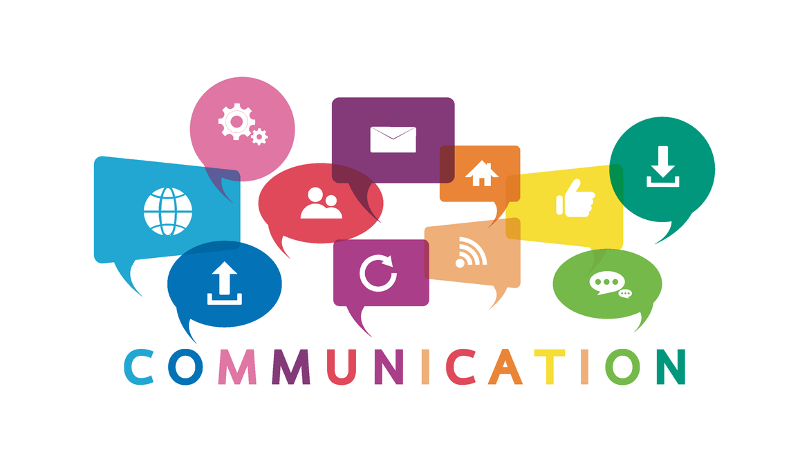
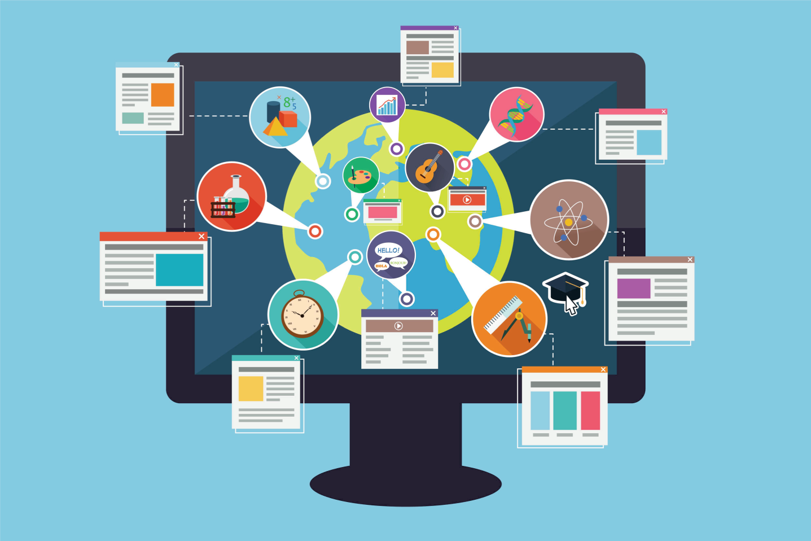
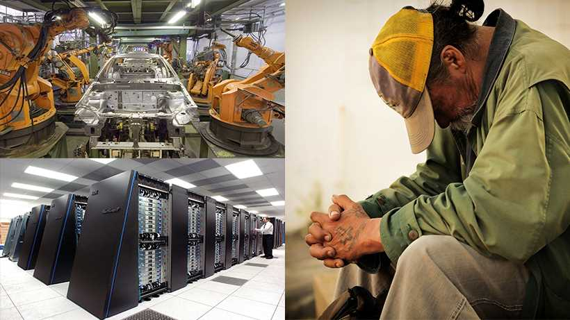

Technology has become an integral part of our daily lives, transforming the way we communicate, work, and
navigate the world. While technological advancements have brought
numerous benefits, it's crucial to examine the impact they have on society as a whole. In this blog, we will
explore the pros and cons of technology, delving into its positive contributions and potential drawbacks. By
critically analyzing these aspects, we can gain a deeper understanding of the role technology plays in shaping
our society.
The Pros of Technological Advancements
Technological advancements have revolutionized various aspects of society, bringing about several positive changes.
Enhancing Communication
Technology has dramatically improved communication by bridging distances and enabling instant connections. Through platforms like social media, email, and video conferencing, people can stay connected with loved ones and collaborate across borders.

Empowering Education
Technology has revolutionized education, providing access to vast resources and online learning platforms. Students can engage in interactive learning experiences, access educational materials anytime and anywhere, and benefit from personalized instruction.

Streamlining Efficiency
Technological advancements have streamlined processes in various industries, increasing efficiency and productivity. Automation, artificial intelligence, and data analysis have optimized operations, resulting in improved outputs and cost savings.
The Cons of Technological Advancements
While technology brings numerous benefits, it also presents certain challenges and potential drawbacks that society must navigate.
Privacy Concerns
The widespread use of technology raises concerns about privacy. With the amount of personal data being collected, stored, and shared, there is a risk of data breaches, identity theft, and surveillance. Striking a balance between convenience and protecting privacy becomes essential.
Social Disconnect
While technology facilitates communication, it can also lead to social disconnect and isolation. Excessive screen time, dependence on virtual interactions, and social media addiction can hinder meaningful face-to-face connections and impact mental well-being.
Job Displacement
Automation and advancements in artificial intelligence have the potential to replace certain jobs, leading to job displacement and unemployment. The workforce must adapt and acquire new skills to remain relevant in an ever-evolving technological landscape.

Conclusion
The impact of technology on society is undeniable. It has revolutionized communication, education, and efficiency in various industries. However, it also brings challenges such as privacy concerns, social disconnect, and job displacement. It is important for individuals and society as a whole to understand and navigate the pros and cons of technology. By leveraging the benefits and addressing the challenges, we can shape a future where technology serves as a tool for positive change, while also safeguarding the well-being and values of our society.
Written on 2023-04-03
Featured Post
Unleashing the Power of Chat GPT: A Guide to Effective Usage

The Future of Technology: Exploring Cutting-Edge Innovations

The Powerful Connection between Exercise and Mental Well-being

Mastering a New Skill: A Year of Learning Experiments